Bengaluru (Bangalore)
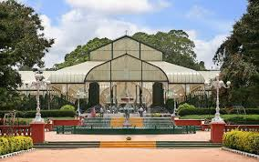
Lalbagh Botanical Garden
Beautiful botanical garden with a wide variety of plants and flowers.
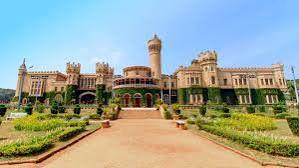
Tipu Sultan's Summer Palace
Summer residence of Tipu Sultan with impressive Indo-Islamic architecture.
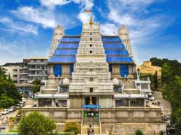
ISKCON Temple Bangalore
Popular temple dedicated to Lord Krishna with a serene atmosphere.
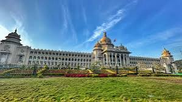
Vidhana Soudha
The seat of the state legislature of Karnataka, known for its grand architecture.
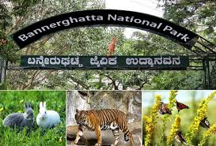
Bannerghatta Biological Park
Park offering a safari experience with wildlife and a zoo.
Mysuru (Mysore)

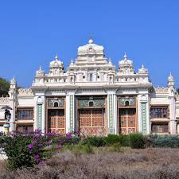
Jaganmohan Palace and Art Gallery
Historical palace featuring a rich collection of art and artifacts.
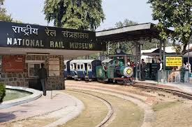
Rail Museum
Museum showcasing the history of Indian Railways with vintage locomotives.
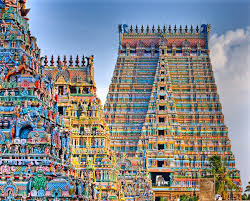
Sri Ranganathaswamy Temple
Historic temple dedicated to Lord Ranganatha, a form of Lord Vishnu.
Hampi
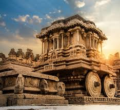
Vitthala Temple Complex
Famous for its stunning architecture and the iconic Stone Chariot.
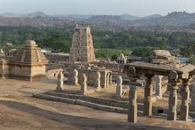
Hemakuta Hill Temples
Group of ancient temples situated on Hemakuta Hill with panoramic views.

Coorg (Kodagu)

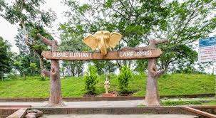
Dubare Elephant Camp
Camp offering elephant rides and interaction with these majestic animals.
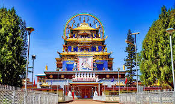
Namdroling Monastery (Golden Temple)
Beautiful Tibetan monastery known for its golden Buddha statues.
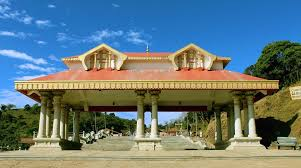
Talakaveri
Origin of the river Kaveri, with stunning views of the surrounding landscape.
Chikmagalur


Bagalkot

Udupi
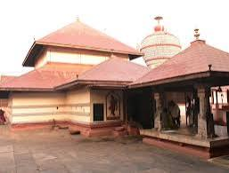
Udupi Sri Chandramouleshwara Temple
Ancient temple dedicated to Lord Shiva with beautiful architecture.